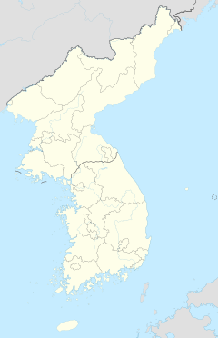

한국은 동아시아의 한반도에 위치하고 있다. 북서쪽으로는 압록강을 경계로 중국과 경계를 이루고, 북동쪽으로는 두만강을 경계로 중국 및 러시아와 마주하고 있다. 삼면이 바다인 한국에는 서쪽으로 황해(서해), 동쪽으로 동해, 남쪽으로 남해에 의해 둘러싸여 있다. 한반도 및 부속도서의 최북단은 함경북도의 온성, 최서단은 평안북도의 마안도, 최동단은 경상북도 울릉군에 속한 섬 독도, 최남단은 마라도이다.

처음으로